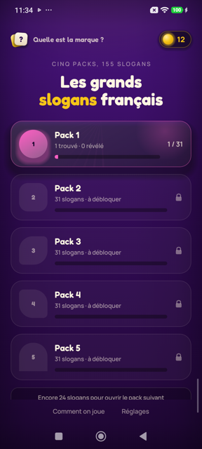
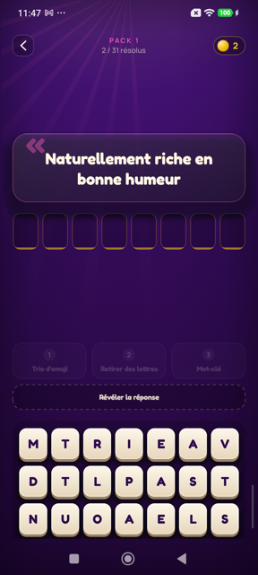
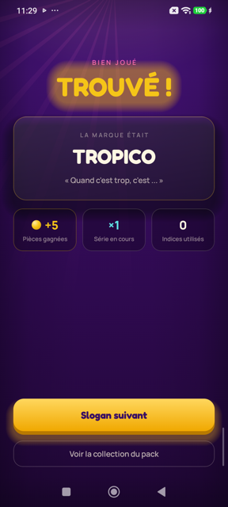
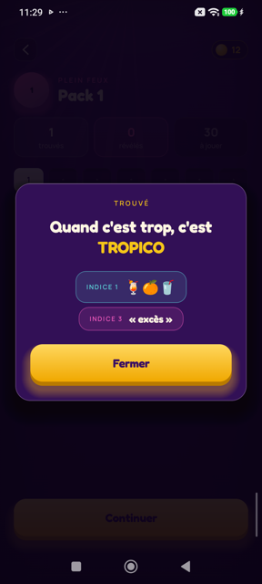

Quelle est la marque ?
Le slogan, vous le connaissez. La marque, c'est une autre histoire.
« Le contrat de confiance. » « Des pâtes, des pâtes, oui mais des… » Vous connaissez la suite : elle vous revient en fredonnant, mais le nom de la marque, lui, se dérobe.
155 slogans publicitaires français, répartis en cinq packs. Un slogan s'affiche, des lettres attendent en désordre en bas de l'écran, et vous avez tout ce qu'il faut pour retrouver le nom — y compris les lettres en trop, qui sont là exprès.
En images




Trois indices, dans l'ordre
Bloqué ? Trois coups de pouce, toujours dans le même ordre, jamais imposés.
- Un trio d'emoji qui évoque la marque.
- La moitié des lettres inutiles disparaissent de la grille.
- Un mot-clé qui parle du nom lui-même — un jeu de mots, une étymologie, une ville.
Et si vraiment vous séchez, vous pouvez révéler la réponse. Le slogan compte alors comme découvert, pas comme raté : votre collection le distingue d'un slogan trouvé, mais il fait avancer le pack tout autant.
Des pièces, ou une vidéo
Chaque slogan trouvé rapporte des pièces, et ce sont elles qui paient les indices. À chaque fois, le jeu vous laisse choisir : payer en pièces, ou regarder une courte vidéo. Aucune pièce ne part et aucune vidéo ne démarre sans que vous ayez dit oui. Et si la cagnotte est vide, la vidéo reste toujours possible — vous ne serez jamais bloqué devant un slogan.
Ce qu'il n'y a pas
Pas de compte à créer. Pas de connexion obligatoire pour jouer : les slogans et votre progression vivent sur votre téléphone. Pas de chronomètre, pas de vies à attendre, pas de notification pour vous rappeler de revenir.